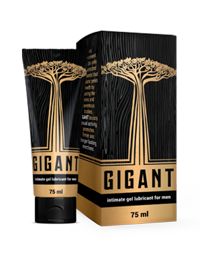

Πού να γνωριστεί κανείς με μια κοπέλα; Φυσικά, στο Διαδίκτυο! Στο δρόμο, μπορεί να περάσει τρέχοντας από μπροστά σας, επειδή δεν είναι έτοιμη για μια συζήτηση στ’ αλήθεια, αλλά στον εικονικό κόσμο, οι πιθανότητες επιτυχίας αυξάνονται κατακόρυφα. Στο Tinder μπορεί κανείς να επιλέξει έναν σύντροφο σύμφωνα με τις παραμέτρους του, αντί να παίζει ρουλέτα όταν συναντά σε ένα μπαρ. Τα κορίτσια, παρεμπιπτόντως, προτιμούν την εικονική επικοινωνία πριν την ερωτική επαφή, έτσι ώστε να μην υπάρχουν μικρές εκπλήξεις
Μετά τη συνάντηση ακολουθεί μια πραγματική συνάντηση και αν ήταν δυνατόν να την εντυπωσιάσετε, τότε μετά από 2-3 ραντεβού (ή ίσως μετά το πρώτο), το κορίτσι είναι έτοιμο για σεξ και το πιο σημαντικό είναι να μην τα κάνεις μούσκεμα

Όσο πιο μεγάλο το έχει ο άντρας, τόσο περισσότερο διαρκεί όχι μόνο ο δικός του αλλά και ο δικός της οργασμός.
Το κλειδί για την επιτυχία μεταξύ των κοριτσιών είναι το μέγεθος του πέους και όχι του πορτοφολιού Αυτό επιβεβαιώνουν οι ερωτήσεις στις μηχανές αναζήτησης, όπου ένα θηλυκό κοινό επιλέγει βίντεο και φωτογραφίες με μεγάλο και παχύ .
Τι γίνεται αν η φύση δεν σας έχει προικίσει με ένα εντυπωσιακό μέγεθος;
Μην ανησυχείτε, το να αυξήστε το πέος και να προσθέστε περισσότερη θέρμη στο σεξ είναι κάτι περισσότερο από πραγματικό, και εδώ είναι οι πιο δημοφιλείς επιλογές:
Η πρώτη είναι μια εγχείρηση
Κοστίζει από $ 20.000 έως $ 50.000
Πώς γίνεται;
Στο πρώτο στάδιο, ο σύνδεσμος κόβεται, ο οποίος βρίσκεται ανάμεσα στο ηβικό οστό και τους ιστούς του πέους. Στο δεύτερο στάδιο, εγκαθίσταται ένας επεκτατήρας - μια συσκευή σε μεντεσέδες που σταθεροποιεί και σταδιακά αυξάνει την πρόσφυση. Για έξι μήνες ή ένα χρόνο, μπορείτε να αυξήσετε το πέος κατά 2 3 εκατοστά. Το πάχος αυξάνεται επίσης. Μια αρκετά δαπανηρή και επίπονη τεχνική με πολλές αντενδείξεις (συμπεριλαμβανομένης της παρατεταμένης αποχής από το σεξ). Υπάρχει κίνδυνος σοβαρών επιπλοκών, συμπεριλαμβανομένης της απώλειας αίσθησης και ανικανότητας


Δεύτερος - αντλίες και ασκήσεις
Κοστίζει από $ 500 έως $ 2.000
Αντλίες Μια μηχανική επίδραση στο πέος προκαλεί αιφνίδιο πρήξιμο του αίματος και ένα ελαφρύ πρήξιμο, ώστε για κάποιο διάστημα το πέος να φαίνεται μεγαλύτερο, αλλά περνάει γρήγορα. Αν χρησιμοποιείτε συχνά τις αντλίες είναι πιθανόν να προκαλέσετε ζημιά στους ιστούς του πέος σας, έτσι ώστε να παραμορφωθεί ή να αρχίζουν προβλήματα με την στύση.

Ασκήσεις Η τεχνική Jelking είναι αυτομασάζ από τη βάση του πέους στο κεφάλι με την καθυστέρηση της εκσπερμάτωσης. Όπως και άλλες μέθοδοι διεύρυνσης, οι ασκήσεις δεν έχουν καμία ένδειξη αποτελεσματικότητας, εν αντιθέτως υπάρχουν επιπλοκές: πόνος και παραμορφώσεις. Και για να μην τραυματιστείτε, χρειάζεστε μια διαβούλευση με έναν ειδικό που δεν είναι τόσο εύκολο να βρεθεί
Το τρίτο είναι το χάπι
Κοστίζει από $ 500 έως $ 3.000

Τα χάπια διεύρυνσης του πέους είναι συμπληρώματα διατροφής που προέρχονται από μείγμα βιταμινών, βοτάνων και ορμονών, χωρίς να αλλάζουν το μέγεθος του πέους. Κανείς δεν ελέγχει την παραγωγή τους και, επομένως, δεν είναι γνωστό ποιο είναι το χάπι (μακάρι να μην υπάρχει τίποτα), αλλά, δυστυχώς, συχνότερα είναι ένα παράλογο μείγμα ορμονών και σιλδεναφίλης, γεγονός που αυξάνει τον κίνδυνο πολυάριθμων καρδιαγγειακών παθήσεων και καρδιακής προσβολής. Εξαρτάτε από το πόσο τυχερός είναι ο καθένας.
Η τέταρτη συμπεριλαμβάνει γέλ και λιπαντικά
Κόστίζει από $ 5 έως $ 500
Η πιο οικονομική, αλλά η και ασφαλέστερη και πιο αποτελεσματική μέθοδος, αλλά εδώ πρέπει να είσαι προσεκτικός και να γνωρίζεις τι πρέπει να πάρεις. Στο διαδίκτυο και το σεξ μπορείτε να αγοράσεις λιπαντικό το οποίο μπορεί να σας προκαλέσει χημικό έγκαυμα. Και για να μην πάθετε αυτό, θα σας πούμε για την νέα μέθοδο μεγέθυνσης του πέους - gel lubricant .
Γιατί συγκεκριμένα το ; Αυτή είναι η πρώτη ζεστή γέλη που βασίζεται σε υδατοδιαλυτές ουσίες που διεγείρουν την μεγέθυνση του πέους με την επέκταση των φλεβών και των σπηλαιωδών σωμάτων
Αποδεικνύεται ότι
αν διεγείρει κανείς τακτικά την κυκλοφορία του αίματος και αυξήσει την πίεση μέσα στο πέος, όχι μόνο θα γίνει μεγαλύτερο, αλλά και παχύτερο
Σε αυτό θα σε βοηθήσει το . Το πρώτο πράγμα που πρέπει να προσέξει κανείς είναι η σύνθεση:
- Υαλουρονικό οξύ - συμβάλλει στην επέκταση και ενίσχυση ευχάριστων αισθήσεων κατά τη διάρκεια της σεξουαλικής επαφής
- εκχύλισμα μέντας - κάνει το πέος πιο ευαίσθητο, αυξάνει την ισχύ
- εκχύλισμα χαμομηλιού - βοηθά τους ιστούς του πέους να γίνουν πιο ελαστικοί και παχύτεροι
- η καφεΐνη - βοηθά στην κορεσμό των κυττάρων με οξυγόνο, και αυτό αυξάνει τη ροή του αίματος και το πέος αρχίζει να μεγαλώνει φυσικά.
Με ένα τόσο εντυπωσιακό σύνολο συστατικών, οι δημιουργοί της γέλης υποστηρίζουν ότι το πέος σας θα μεγαλώσει κατά 5 εκατοστά σε ένα μήνα και θα ξεχάσετε τι θα πει γρήγορο και βαρετό σεξ.
Τα πλεονεκτήματα περιλαμβάνουν την έλλειψη ορμονών, την ασφάλεια, την ευκολία χρήσης. Παρέχει μια βαθύτερη διείσδυση, διεγείροντας τόσο εσένα όσο και την σύντροφό σου.
Πώς να γίνεις γκουρού του σεξ

Είναι σαν να κερδίζεις ένα λαχείο ή να απαντάς στις μόνες ερωτήσεις που έχεις μάθει για την εξέταση. Με ένα μεγάλο πέος δεν χρειάζεσαι καμία προσπάθεια. Έχοντας μάθει για το εντυπωσιακό σου μέγεθος, κάθε σεμνή γυναίκα είναι έτοιμη να κάνει μια σεξουαλική επίδειξη που θα ζήλευαν οι αστέρες του πορνό.
Ονειρεύεσαι το ίδιο; Τότε απέκτησε το , πιέστε στο πέος χωρίς δισταγμό και αρχίστε να κάνετε ένα απλό μασάζ από τη βάση ως στο κεφάλι.

Χρησιμοποιώντας το καθημερινά, τα αποτελέσματα θα είναι τα εξής:
- 7-10 ημέρες: το πέος θα μεγαλώσει κατά 1 εκατοστό και η ευαισθησία θα αυξηθεί επίσης
- 20 ημέρες: το σεξ θα έχει διπλάσια διάρκεια και θα είναι πιο ευχάριστο, επειδή το πέος έχει μεγαλώσει κατά 3 εκ.
- 30 ημέρες: δυνατή στύση, οργασμοί που κρατάνε πολύ και μεγάλο πέος (ανάπτυξη μήκους κατά 5 εκατοστά και πλάτους έως και 3 εκατοστά)
Αν φαίνεται ότι έχετε ήδη δοκιμάσει τα πάντα χωρίς κανένα απολύτως αποτέλεσμα, ήρθε η ώρα να δοκιμάσετε το . Σίγουρα θα σας αρέσουν οι ΜΕΓΑΛΕΣ ΑΛΛΑΓΕΣ.
Πρέπει να το δοκιμάσω, μερικά εκατοστά δεν θα με βλάψουν))
Επίσης δοκιμάζω το .Το πέος έχει αυξηθεί κατά 5 εκατοστά, δεν μεγαλώνει πια, αλλά δεν χρειάζομαι περισσότερο, η γυναίκα μου ήδη παραπονιέται ότι έχει γίνει πάρα πολύ μεγάλο. Για την καύλα επίσης είναι ένα καλό φάρμακο. Το βάζεις και είσαι έτοιμος για δράση επί δύο ώρες. Με λίγα λόγια, έχω αρκετές δυνάμεις για τη γυναίκα μου και δύο ερωμένες.
Λοιπόν, αν έχει αληθινή δράση, τότε είναι σούπερ. Ευτυχώς που δεν έχω τέτοιες σκοτούρες, η φύση μου χάρισε 19 εκατοστά.
Το αγόρι μου το χρησιμοποιεί, και του το αγόρασα εγώ η ίδια. Το πέος του ήταν 12 εκατοστά, δεν μου έφτανε και του το είπα ευθέως. Με το που δοκίμασε το , έγινε ήδη 18 εκατοστά! Περισσότερο και απ’ τον πρώην μου)) Τώρα είμαι ικανοποιημένη.
Πρόσφατα έμαθα για το , αλλά φοβόμουν κάπως να το παραγγείλω, σκέφτηκα ότι πρόκειται για απάτη. Το χρησιμοποιώ εδώ κα μια εβδομάδα τώρα, έχει μεγαλώσει +1 εκατοστό. Αν συνεχιστεί με αυτό τον τρόπο, σε δύο μήνες θα το έχω μεγάλο
Το πέος πρέπει να το τεντώνουμε με κάποιο τρόπο; Αν όχι, τότε κατά πόσο θα μεγαλώσει σε ένα μήνα;
Παρεμπιπτόντως, μόνο έτριβα το , δεν τέντωνα τίποτα, έχω +3 εκατοστά σε ένα μήνα.
Υπάρχει πόνος ή ενοχλήσεις κατά την μεγέθυνση του πέος; Αφού οι ιστοί τεντώνονται.
όλα είναι εντάξει, μην φοβάστε. Χρησιμοποιούσα το μόνο ως λιπαντικό, αλλά αποδείχτηκε ότι επιπλέον έχει μεγαλώσει το πέος μου.
Ήμουν έτοιμος να κάνω εγχείρηση, δεν άντεχα πια τα 11 εκατοστά μου, προς το παρόν θα το παραγγείλω το , ίσως στα αλήθεια με βοηθήσει.
Ο φίλος μου έκανε εγχείρηση μεγέθυνσης. Τώρα δε του σηκώνεται καθόλου ...
Ναι, υπάρχουν παρόμοιες παρενέργειες μετά την εγχείρηση, το έχω ακούσει αυτό. Σε γενικές γραμμές, υπάρχει ένας πολύπλοκος μηχανισμός, εδώ να κόψετε, εκεί να αφαιρέσετε, εδώ να προσθέσετε. Ναι, και γιατί να πληρώνετε περισσότερα εάν το είναι πραγματικά αποτελεσματικό και μπορείτε αμέσως να κάνετε σεξ και να μην απέχετε για αρκετούς μήνες.